MILIASTRA WORKSHOP / EPISODE 05Build a Working Progress Bar
A native Player-bound progress bar, added through template, layout and class, verified from zero through five and after retry.
Use Player Themself for Coins, ProgressMin and CoinGoal. Keep Coins as Integer. The current client displays one decimal in its 1:1 style. Save the template changes, add its instance to the layout and check the class. Test the live values in a fresh private challenge.
00:3501. Continue from the five-coin lesson
Use a separate copy of the five-coin lesson save. Keep the tested version from last time available. It already has the pickup graph and the predefined Player variable Coins. The first library-entry example uses a separate setup copy; we'll configure and test the complete lesson HUD in our working copy.
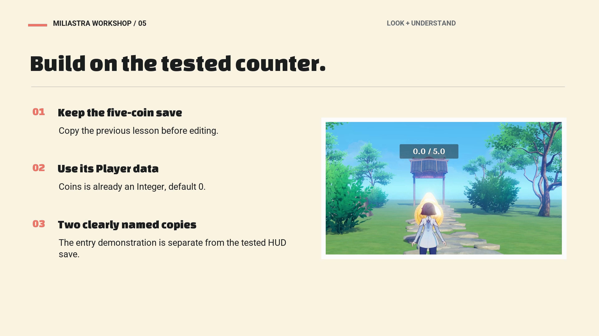
01:3404. Choose a clear starting shape
Select the progress bar and open its Functions settings. We'll use Horizontal, filling from left to right. The colour and size can suit your scene. For this exercise, concentrate on the data settings: Current Progress Value, Minimum Value, and Maximum Value. Those three fields determine what the fill means.
Official guide: Concept Introduction / Assets / UI Controls / Progress Bar UI Controls
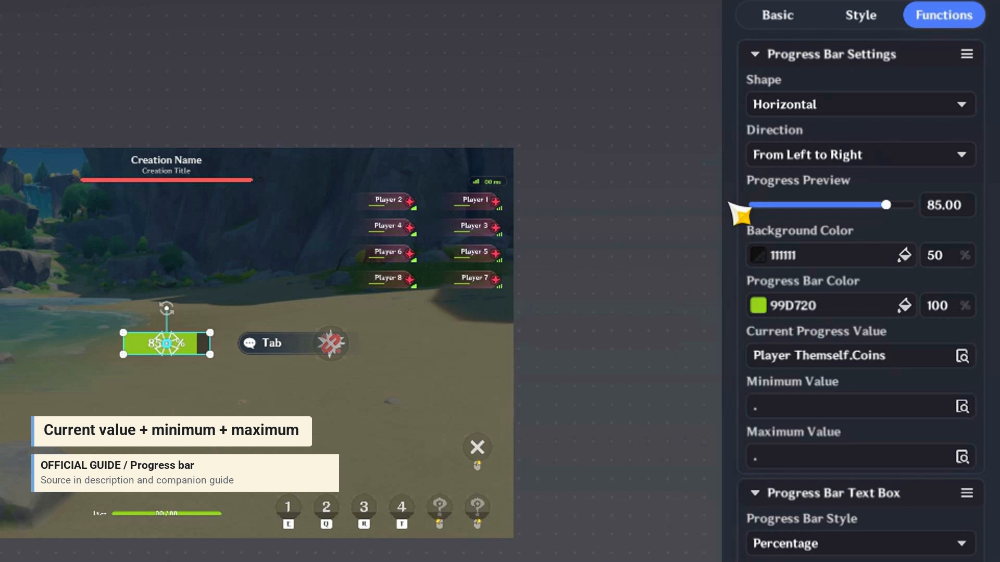
01:5305. Choose the Player who owns Coins
Open the Current Progress Value selector. In Variable Library, expand Player Themself and select Coins. That is the Player variable updated by the pickup graph. We didn't store our total on the disappearing coin. Keeping the data owner consistent is what lets this display follow the correct counter.
Official guide: Concept Introduction / Functions / Common Components / Custom Variables
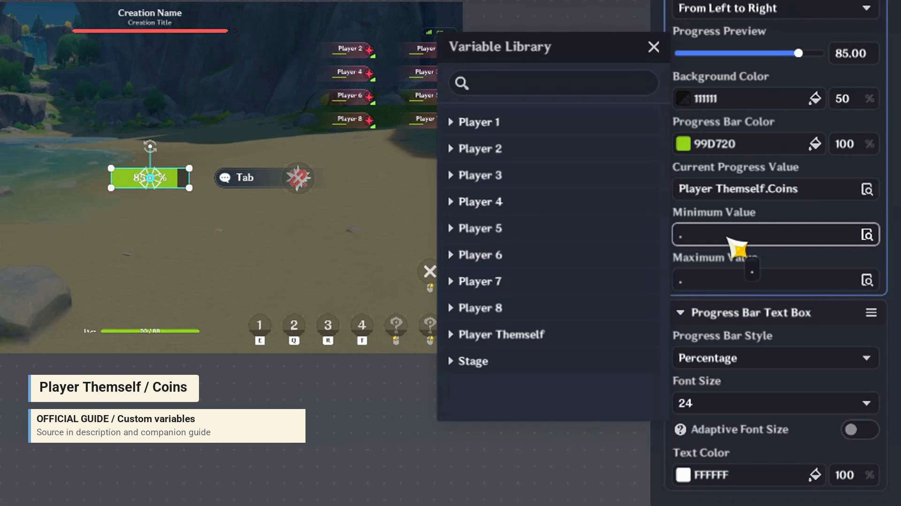
02:3508. Editing preview is separate from play
Notice Progress Preview in the editor. Its example value helps you see how the control looks while designing it. It doesn't mean the player has collected that many coins. Our actual test should begin at zero. We'll use the live display, rather than the preview setting, to check the binding.
Official guide: Concept Introduction / Assets / UI Controls / Progress Bar UI Controls
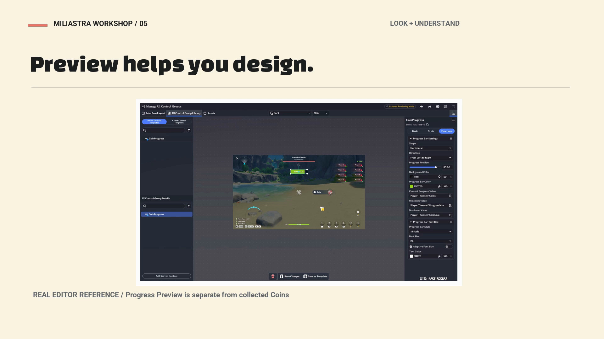
02:5109. Create the reusable template
Use Save as Template and choose New Template. Name it CoinProgress and confirm. This creates the reusable item in the library. We'll reopen its settings to finish the minimum and maximum bindings. When updating an existing template, use Save Changes, rather than making another new template with a similar name.
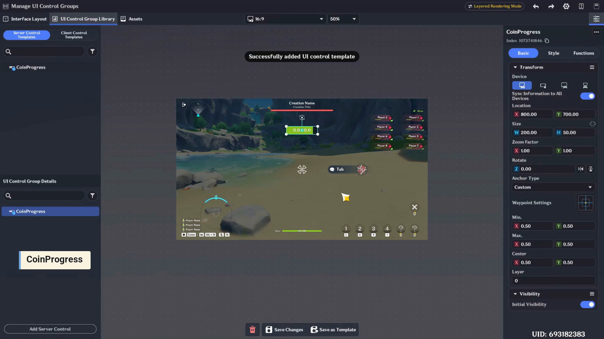
03:1110. Define a zero and a goal
Combat Preset → Player → Player Template → Default → Edit Player → Components → Custom Variable → Advanced Editing → Standard Variable. Add ProgressMin as Integer 0 and CoinGoal as Integer 5. The exported layout/template .gia does not include these Player variable definitions; define them before reuse.
Official guide: Concept Introduction / Functions / Common Components / Custom Variables
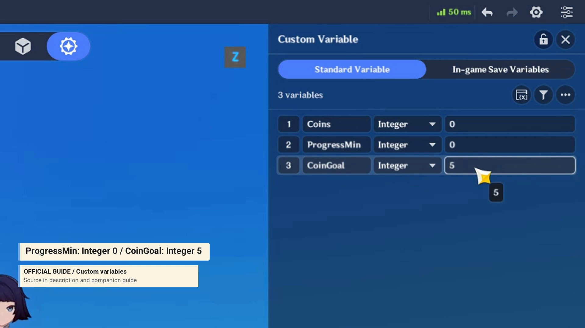
03:5011. Bind the empty and full values
In the CoinProgress template Functions, bind Current Progress Value to Player Themself → Coins, Minimum Value to Player Themself → ProgressMin and Maximum Value to Player Themself → CoinGoal. Saving the template is separate from adding its layout instance.
Official guide: Concept Introduction / Assets / UI Controls / Progress Bar UI Controls
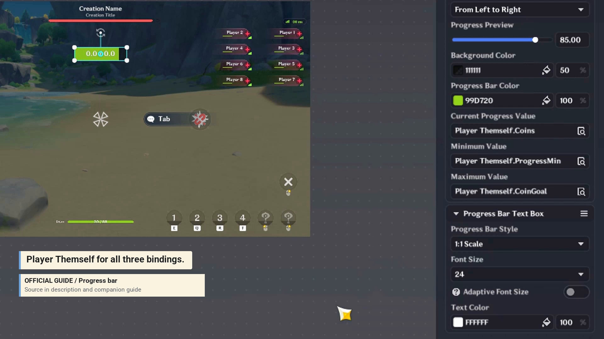
04:2312. Read the fill as a proportion
With this range, one coin fills one fifth of the bar, and three coins fill three fifths. Five reaches the maximum. The bar is showing the current value between its minimum and maximum. If you change the number of coins in your own challenge, review the goal and the rule together.
Official guide: Concept Introduction / Assets / UI Controls / Progress Bar UI Controls
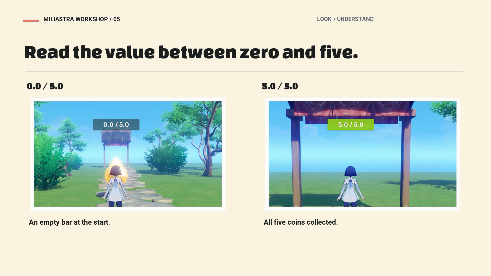
04:4013. Make the information easy to read
Choose a size and position that you can read while moving. I keep the bar near the upper centre, with room around the original exit and direction display. Check the number against both empty and filled backgrounds. A wide bar won't help if its text disappears into the landscape. You can choose different colours and spacing.
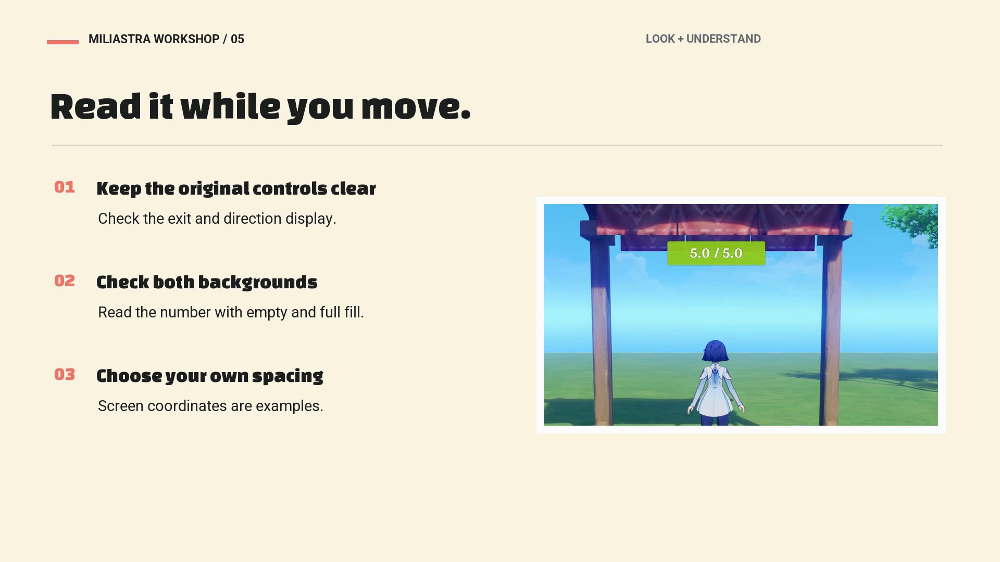
04:5914. Apply the template changes
After the initial Save as Template → New Template creates CoinProgress, later edits use Save Changes → Confirm Changes. The displayed reference count is zero at this point because the template has not yet been added to Default Layout. This is not an automatic save.
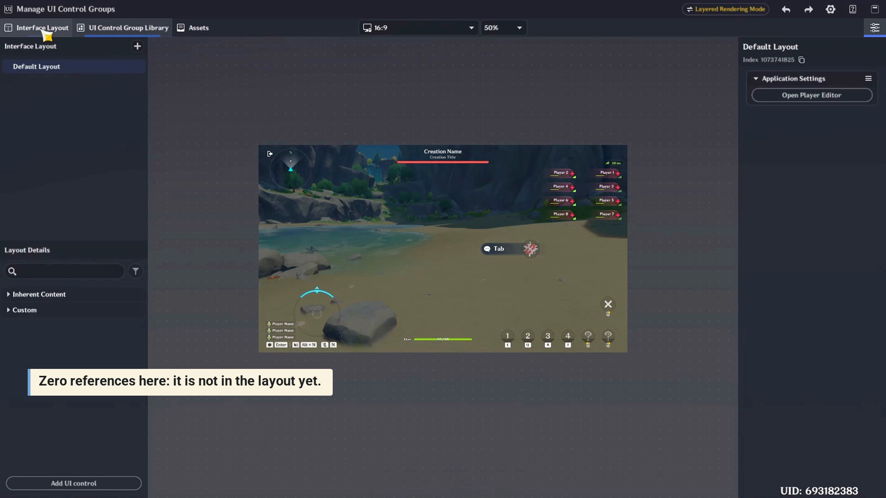
06:1617. Save and start a private test
Quick Save the scene and wait for the saved acknowledgement. Start a fresh private Test Play and wait for the character and HUD. We haven't added a countdown or a completion rule yet. This test is about the coin counter, its fill, and the layout actually used by the player.
06:4618. Check the empty state first
At the start, the bar reads zero point zero out of five point zero, with no green fill. That's the expected empty state for this version of the native control. If yours begins full, check the minimum, maximum, and source variable before collecting anything. The existing coins should still be waiting along the trail.
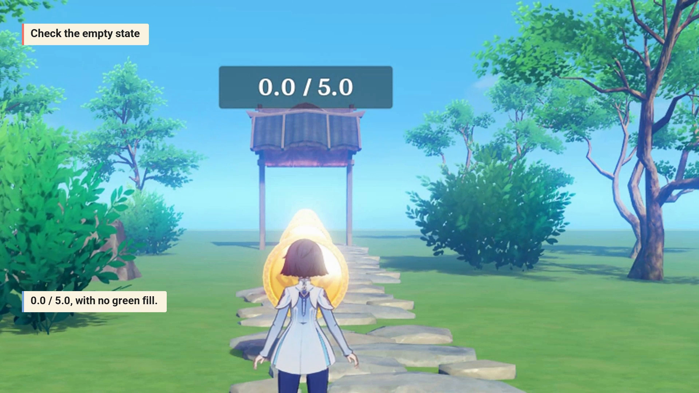
07:0519. Watch one pickup update the bar
Walk into the first coin and stop. The coin disappears, and the display changes to one out of five, with about twenty percent fill. We haven't added a second counting graph for the interface. The pickup graph changes Coins, and this control reads that same value. That connection keeps the number and the visual fill together.
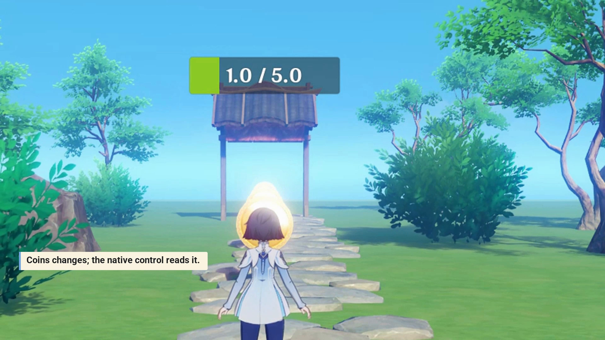
07:2520. Check the middle and full states
Continue along the route. Two coins show about forty percent, three show sixty, and four show eighty. After the fifth, the display reaches five out of five and the bar is full. Check the middle values as well as the final one. A correct-looking full bar could hide an incorrect range.
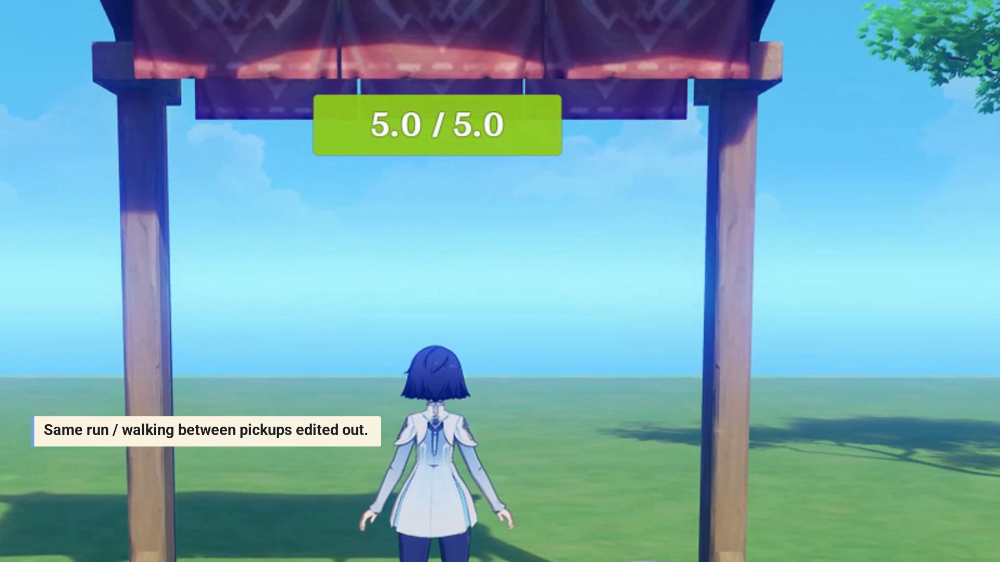
07:5821. Check the reset with Retry Challenge
Choose Retry Challenge. The coins return, and the HUD goes back to zero out of five with an empty bar. We haven't manually filled or cleared the control for this check. The new challenge instance starts with the predefined Player values again, and the native binding displays the new counter.
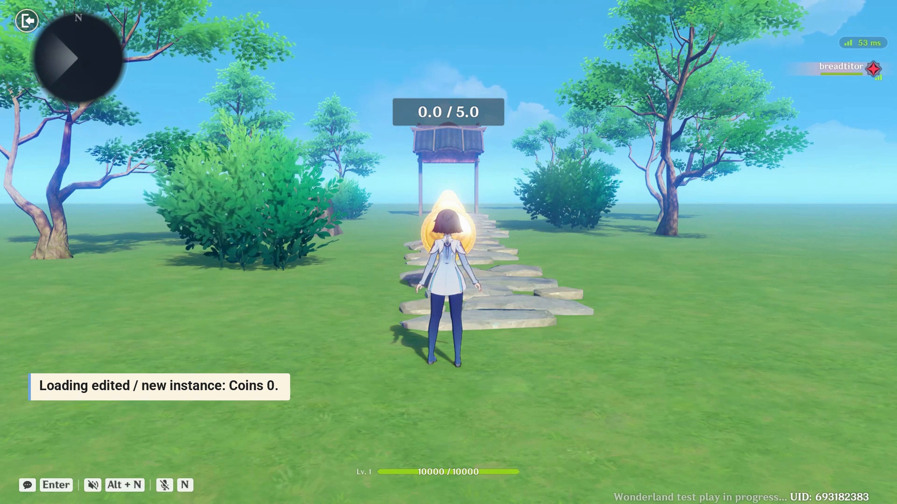
08:1722. If the bar is missing
If you can't see your control, check the chain in order. Is the template saved? Is its instance in the layout? Does the active class select that layout? Then check its visibility and position. These checks answer a different question from whether the pickup graph is counting correctly.
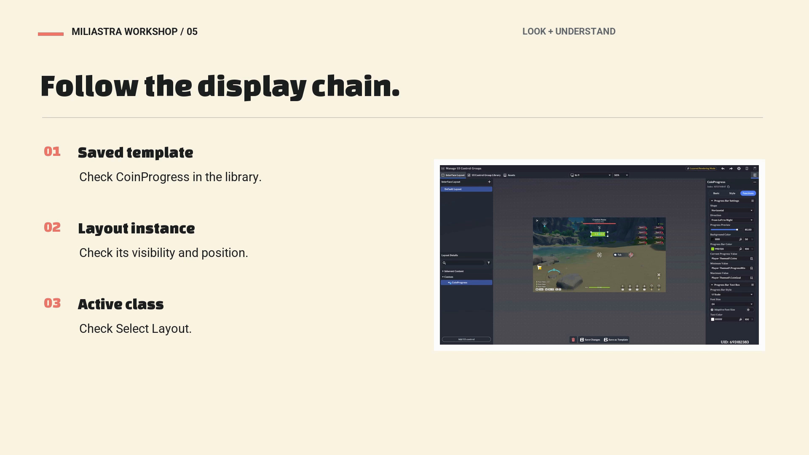
08:3323. If the number does not update
If the control appears but its value is wrong, return to the bindings. Check Player Themself, the exact variable name Coins, and the zero-to-five range. The graph's target and the UI's source need to describe the same Player data. You can compare the native log with the HUD to narrow down which part needs attention.
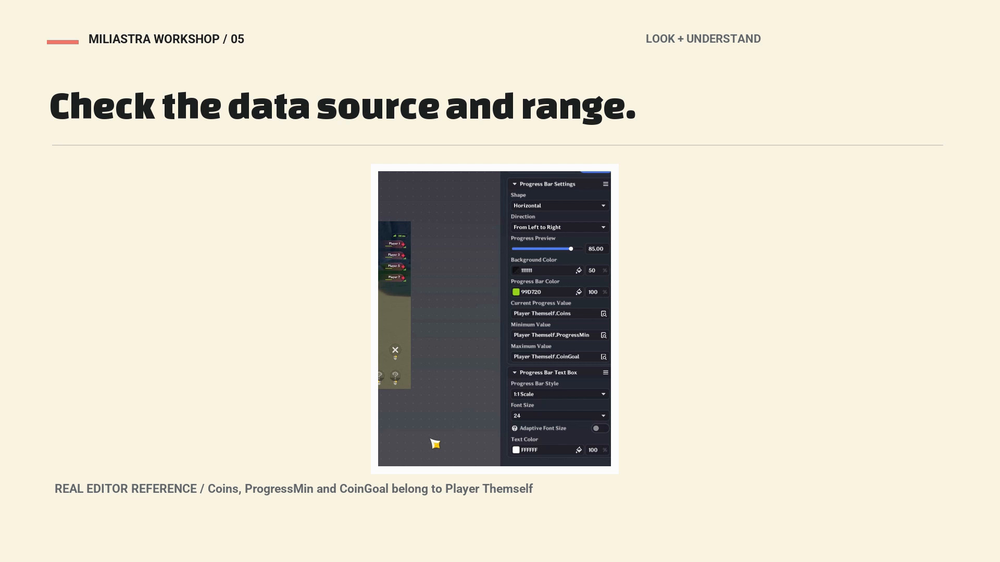
08:5224. Check your own HUD
Try one pickup, a middle value, a full bar, and a retry in your own copy. Explain which setting supplies the current value, which two settings define the range, and why the layout and class are both involved. The purpose is a readable display that follows real data, rather than a copy of my screen coordinates.
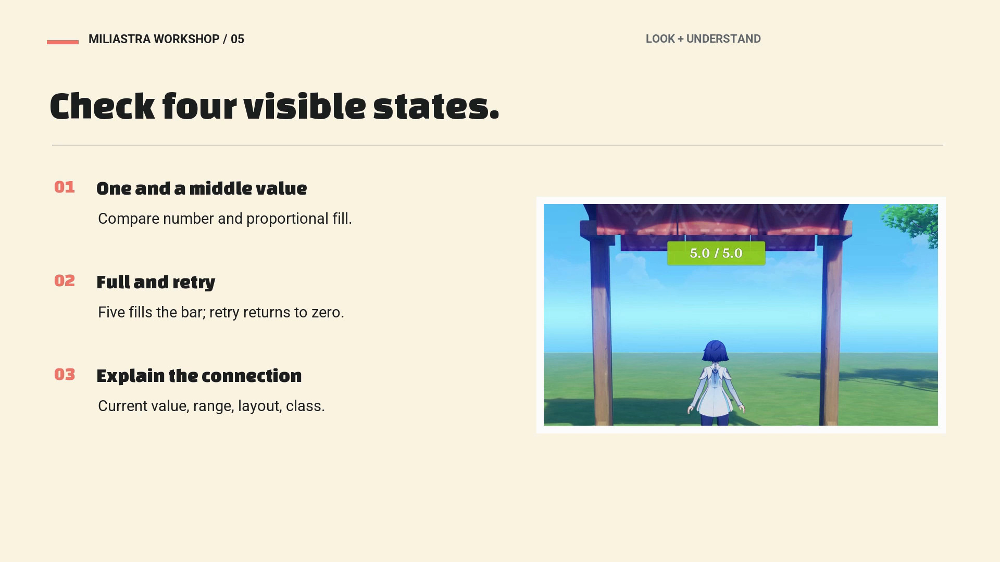
Official references
These explanations use our own words. Native interface labels are shown in the images. A short test covers the actions shown; test the important systems in your own version after changes.